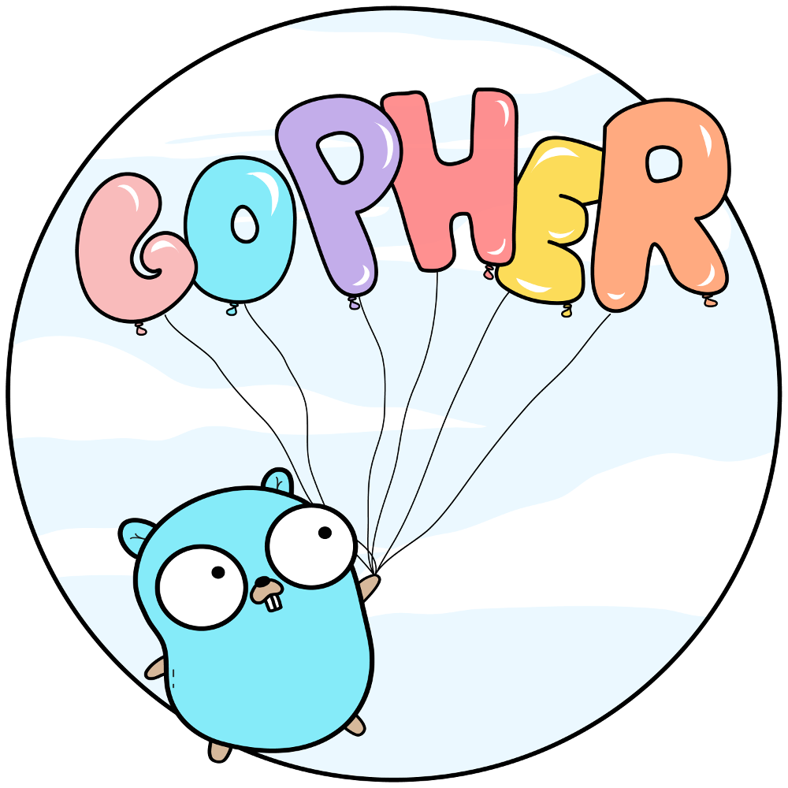

Project documentation
Online documentation (to be improved)
-
Front-end UI framework：element-ui
-
Background framework：GoFrame
1. basic introduction
1.1 Project Introduction
Online preview (to be improved)
Gf-vue-admin is a full-stack back-end management system based on vue and GoFrame. It integrates jwt authentication, dynamic routing, dynamic menu, casbin authentication, form generator, code generator and other functions, providing multiple
This kind of sample files allows you to devote more time to business development.
1.2 Contribution guide
Hi! First of all, thank you for using gf-vue-admin.
GoFrame-vue-admin is a set of open source frameworks prepared for the back-end management platform with a separated architecture of front and back ends, aiming to quickly build a back-end management system.
The growth of GoFrame-vue-admin is inseparable from everyone's support. If you are willing to contribute code or provide suggestions for GoFrame-vue-admin, please read the following.
1.2.1 Issue specification
-
Issues are only used to submit bugs or features and design-related content, other content may be directly closed。If you have questions while using，Go to Slack or Gitter Consulting。
-
Before submitting an issue, please search whether the relevant content has been submitted。
1.2.2 Pull Request specification
-
Please fork a copy to your own project first, do not directly branch under the warehouse。
-
The commit information should be
[filename]: descriptionFill in the form，for exampleREADME.md: fix xxx bug。 -
Ensure that the PR is submitted to
developBranch，Instead ofmasterBranch。 -
If it is a bug fix, please provide a description in the PR。
-
The merging code requires the participation of two maintainers: one approve after review, the other review again, and the merge can be done after approval。
1.3 Version list
- master: 1.0, function is currently being tested
2. Instructions for use
-node version> v8.6.0
-golang version >= v1.11
-IDE recommendation: Goland
-After the clone project, after you import the db file into the library you created, it is best to go to Qiniu Cloud to apply for your own space address.
-Replace the Qiniu Cloud public key, private key, warehouse name and default URL address in the project to avoid data confusion in the test file
2.1 web
# clone the project
git clone https://github.com/piexlmax/gin-vue-admin.git
# enter the project directory
cd web
# install dependency
npm install
# develop
npm run serve
2.2 server
# Use go.mod
# Install go dependencies
go list (go mod tidy)
# Compile
go build
2.3 swagger automation API documentation
- Reasons to remove swagger
- Comment redundant code, resulting in bloated code
- Recommend alternative tool apipost
3. Technical selection
- Frontend: using Element-UI based on vue，to code the page.
- Backend: using Gin to quickly build basic RESTful API. Gin is a web framework written in Go (Golang).
- DB: MySql(8.0.19)，use gdb to realize the basic operation of the database..
- Cache: using Redis to implement the recording of the JWT token of the currently active user and implement the multi-login restriction.
- Config: using gcfg Configuration management 。
- Log: using glog record logs。
4. Project structure
4.1 System architecture diagram

4.2 Front-end detailed design drawing （provider:baobeisuper）

4.3 目录结构
├─server （backend）
└─web （frontend）
├─public （deploy templates）
└─src （source code）
├─api （frontend APIs）
├─assets （static files）
├─components（components）
├─router （frontend routers）
├─store （vuex state management）
├─style （common styles）
├─utils （frontend common utilitie）
└─view （pages）
See this directory for the backend
5. The main function
- authority management：based on gf-jwt And casbin Implemented rights management
- File upload and download：Realize file upload operation based on Qiniu Cloud
- Paging package：The front end uses mixins to encapsulate paging, and the paging method calls mixins
- User Management：System administrators assign user roles and role permissions。
- Role management：Create the main object of permission control, you can assign different api permissions and menu permissions to roles。
- Menu management：Realize user dynamic menu configuration, realize different menus for different roles。
- api management：Different users have different permissions on the api interface that can be called。
- Rich text editor：MarkDown Editor function embedded。
- Conditional search：Add conditional search example。
- restful Example：You can refer to the sample API in the user management module。
- Multi-sign-in restrictions：需要在
config.toml中把system中的UseMultipoint修改为true - Split long pass：Provide examples of file segment upload and large file segment upload function
- Form builder：The form builder uses @form-generator。
- Code generator：Basic background logic and simple curd code generator。
6. Scheduled Tasks
- [ ] Import, export to Excel
- [ ] Echart chart support
- [ ] Workflow, task handover function development
- [ ] Separate front-end usage mode and data simulation
- [ ] User multi-role
- [ ] Self-written api batch import permission assignment list
- [ ] Automatic import of generated files
7. knowledge base
7.1 Team blog
https://www.yuque.com/flipped-aurora
There are front-end framework instructional videos inside.
If you think the project is helpful to you, you can add my personal WeChat: shouzi_1994, welcome your valuable needs。
7.2 Teaching video
（1）Golang basic instructional video recording...
https://space.bilibili.com/322210472/channel/detail?cid=108884
8. Contact information
8.1 Technology Group
| QQ群 |
|---|
 |
QQ exchange group：1040044540
WeChat exchange group: add WeChat account SliverHorn, note "join gf-vue-admin exchange group"
8.2 Project team members
| Jiang | Yi | Yan | Du | Yin | Song |
|---|---|---|---|---|---|
 |
 |
 |
 |
 |
 |
| Nick name | Project position | First name |
|---|---|---|
| @piexlmax | Project sponsor | Jiang |
| @granty1 | Backend developer | Yin |
| @Ruio9244 | Full-stack developer | Yan |
| @1319612909 | UI developer | Du |
| @krank666 | Frontend developer | Yin |
| @chen-chen-up | Novice developer | Song |
| @SliverHorn | Community Administrator | Lai |
9. Donate
If you find this project useful, you can buy author a glass of juice 🍹 here
10. Commercial considerations
If you use this project for commercial purposes, please comply with the Apache2.0 agreement and retain the author's technical support statement.